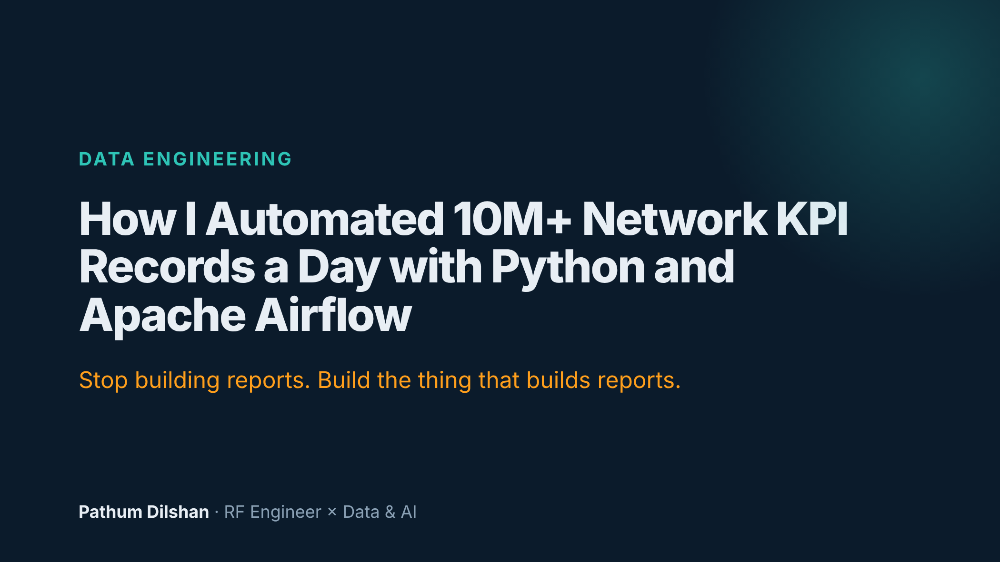
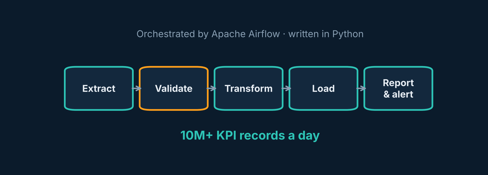

How I Automated 10M+ Network KPI Records a Day with Python and Apache Airflow
The pattern behind a telecom reporting pipeline, and the mistakes that taught me the most

Every hour, a mobile network generates performance counters for every cell: traffic, drops, handovers, throughput, congestion. At Mobitel that adds up to more than 10 million KPI records a day. For a long time, turning that into reports meant exporting files, merging them in Excel and rebuilding the same charts every morning.
So I built pipelines in Python and Apache Airflow to do it automatically. They cut manual reporting effort by about 40%. Here's the pattern, and what I'd tell anyone building something similar.
The pattern

- Extract: pull counter exports from the network management systems on a schedule.
- Validate: check that files arrived, row counts look sensible and no cells are missing.
- Transform: clean, standardise names, calculate KPIs from raw counters and aggregate by cell, cluster and region.
- Load: store the results in a database that reports and analysis can query.
- Report and alert: refresh dashboards and flag cells that need attention.
Airflow ties it together. Each step is a task, the dependencies are explicit, and if something fails you can see exactly where and rerun just that part.
Lessons that mattered most
1. Validation is not optional
The most dangerous pipeline isn't the one that fails. It's the one that succeeds with bad data. A late file, a missing region or a changed column name can silently produce a report that looks fine and is wrong. Checking inputs before processing them saved me more than once.
2. Make every task safe to rerun
Things will fail: a server is down, a file is late. If rerunning a task creates duplicates or overwrites good data, every failure becomes a manual clean-up. Designing each step so it can run twice with the same result (idempotency) makes recovery a click instead of an afternoon.
3. Calculate KPIs in one place
When three reports each calculate "drop rate" slightly differently, meetings turn into arguments about whose number is right. Defining each KPI once, in the pipeline, means everyone works from the same truth.
4. Automate the boring part first
I didn't start with machine learning. I started with the report everyone hated building. Once the data was flowing reliably, more interesting work like ML-based anomaly detection became possible, because the foundation was there.
5. Log as if you'll debug it at 2 a.m.
Because one day you will. Clear logs saying what ran, how many rows and what was skipped turn a mystery into a five-minute fix.
What it changed
About 40% less time spent on manual reporting, consistent numbers across teams, and more time for actual optimization work. The lesson I'd pass on: stop building reports. Build the thing that builds reports.
Pathum Dilshan is an RF & Network Planning Engineer at Mobitel, Sri Lanka, and an MSc Data Science & AI student at the University of Moratuwa. He writes about telecom, data and AI. Connect on LinkedIn or visit pmpdilshan.github.io.